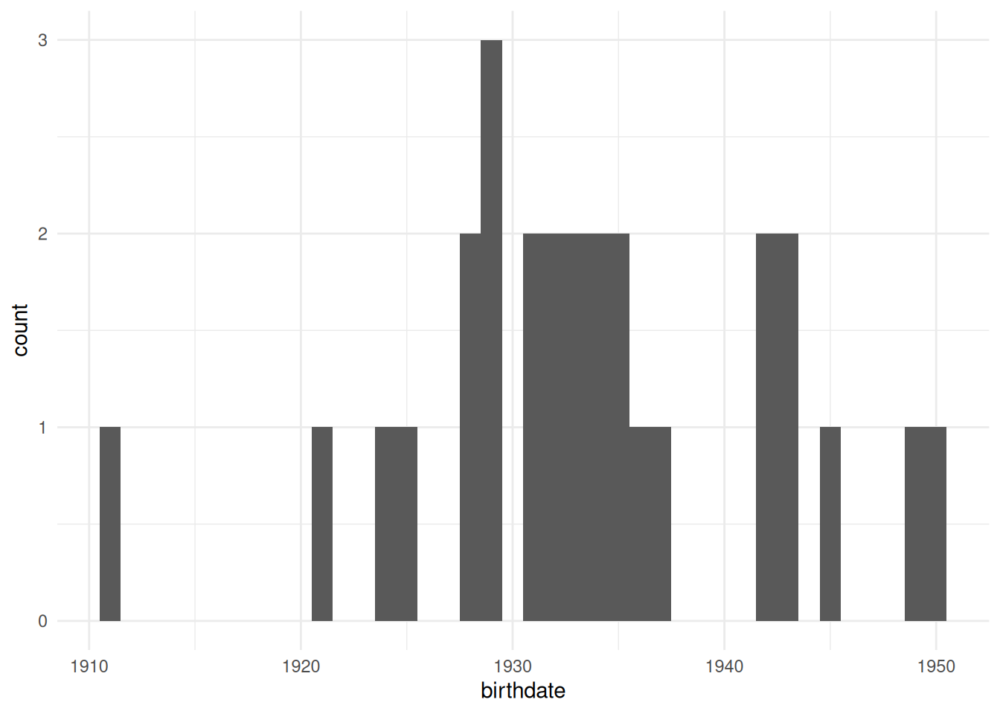
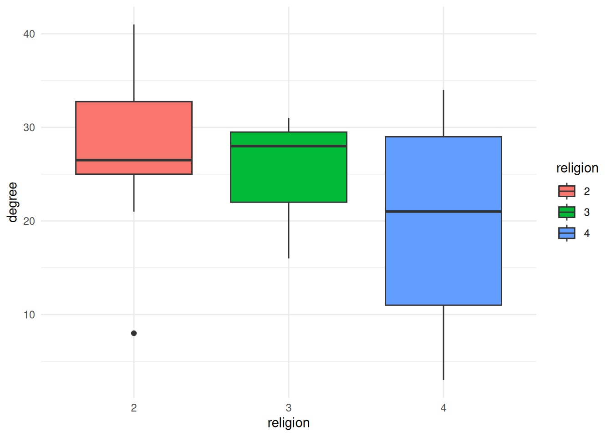
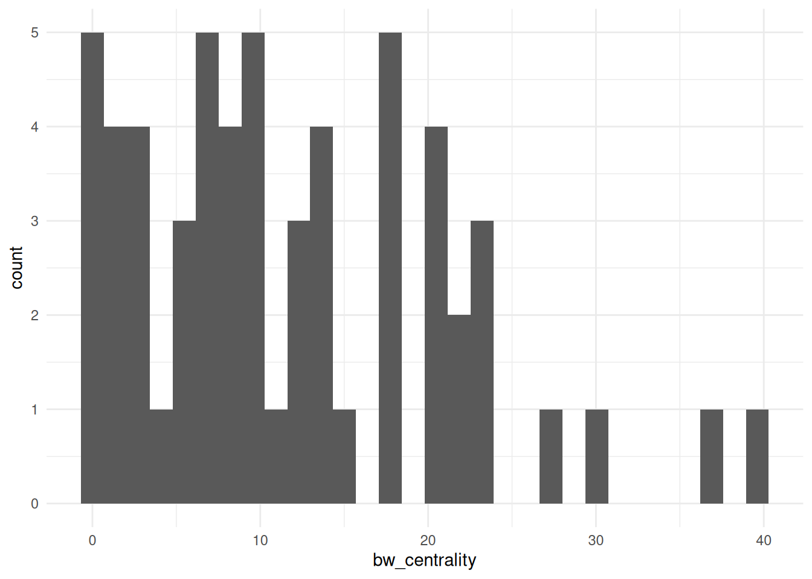
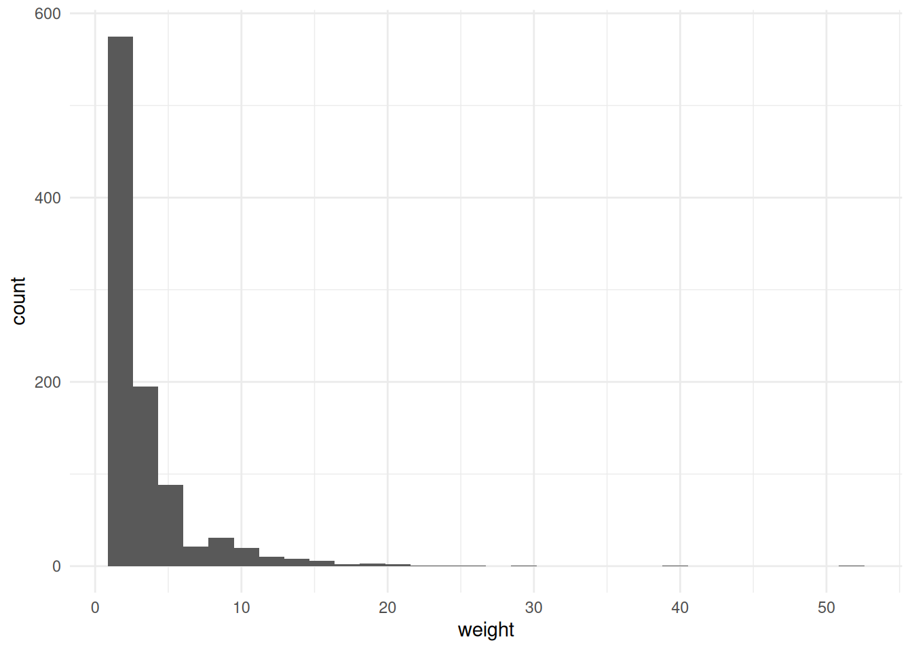
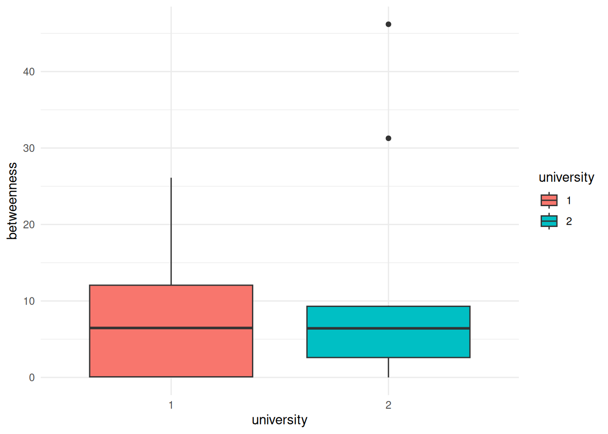

G <- ffe_elite |> as_tbl_graph()Calculating Network Statistics
So far, we have focused on visualizing the network itself. This lesson will focus on calculating and visualizing statistics about the network.
Network statistics
There are a lot of statistics that we might care about, and tidygraph and igraph have a number of functions to calculate them.
Let’s start with some simple graph-level measures, for our ffe_elite network.
Number of nodes:
G |> gorder()[1] 28Number of edges:
G |> gsize()[1] 330Number of mutual edges:
G |> activate(edges) |> filter(edge_is_mutual()) |> gsize()[1] 160Centralization:
G |> centr_degree()$res
[1] 11 41 34 8 16 15 33 29 21 25 31 8 28 27 27 26 25 24 29 4 32 21 17 26 35
[26] 27 37 3
$centralization
[1] 0.3347051
$theoretical_max
[1] 1458Identifying the most central nodes
We can also show the most central nodes in a table. We already know how to calculate centrality measures. After we calculate them, we have to take a step that’s a bit more complicated—basically, we take our node spreadsheet and temporarily convert it back to a “normal” R spreadsheet (a.k.a., tibble), and then manipulate the spreadsheet. That’s what the as_tibble() line below does.
After it’s in a spreadsheet, the select command is the list of columns we want to keep for our table, the arrange command sorts the table (the - before bw_centrality sorts it in reverse order, from highest to lowest). Finally, the head command shows the top N nodes.
G |>
activate(nodes) |>
mutate(bw_centrality = centrality_betweenness()) |>
as_tibble() |>
select(vertex.names, bw_centrality) |>
arrange(-bw_centrality) |>
head(10)# A tibble: 10 × 2
vertex.names bw_centrality
<chr> <dbl>
1 E8 46.2
2 E120 31.3
3 E117 26.1
4 E9 15.9
5 E77 15.6
6 E49 12.6
7 E41 12.1
8 E93 9.39
9 E28 9.21
10 E53 8.74Visualizing node or edge-level statistics
The other thing I want to show you how to do is to visualize attributes of the nodes or the edges. There are entire courses on visualizations, but I want to show you how to do a few.
Histograms
We may want to visualize the distribution of attributes or network statistics.
We’ll use tibbles again, and then instead of using ggraph, we use ggplot, which is one of R’s general plotting packages.
geom_histogram tells it to create a histogram, in this case with the x axis mapped to the birthdate variable.
Finally, theme_minimal() adds the axes and tick marks to the graph (try it without that line to see what I mean).
G |>
activate(nodes) |>
as_tibble() |>
ggplot() +
geom_histogram(aes(x=birthdate), binwidth=1) +
theme_minimal()
If we want to visualize how centralized a network is, a good way to do that is to show the distribution of degree (or betweenness or another centrality measure.) As we have done in a few previous labs, we’ll first need to create the column using mutate and then we’ll visualize it in the same way, using ggplot and geom_histogram.
Note: You’ll need to calculate networks statistics before calling as_tibble. R knows how to get the centrality of a node spreadsheet, but once it’s converted to a tibble, it doesn’t know what to do.
G |>
activate(nodes) |>
mutate(degree = centrality_degree(mode='all')) |>
as_tibble() |>
ggplot() +
geom_histogram(aes(x=degree)) +
theme_minimal()`stat_bin()` using `bins = 30`. Pick better value with `binwidth`.
Boxplots
The other thing we might want to do is compare the distributions of some network measure for different groups. There are lots of ways to do this, but the one I’ll show here is a “boxplot”. This shows where the “typical” values are for each group.
For example, this shows the degree distribution for each of the different religions in the ffe_elite dataset.
G |>
activate(nodes) |>
mutate(degree = centrality_degree(mode='all')) |>
mutate(religion = as_factor(religion)) |> # Change religion to a factor
as_tibble() |> # convert to a tibble
ggplot() +
geom_boxplot(aes(x=religion, fill=religion, y=degree)) + # `fill` changes the filled in color. Try changing this to `color` instead
theme_minimal()
Exercises
- Figure out how to calculate the betweenness centralization for
Gand print it out.
$res
[1] 0.00000000 46.18684094 15.91020646 0.00000000 0.00000000 0.07692308
[7] 9.21303141 12.06143301 3.21816794 5.26654457 12.60273893 0.00000000
[13] 7.23411311 8.73725164 6.88686591 6.46853979 4.23056666 5.20114053
[19] 15.63770951 0.00000000 9.39394772 0.00000000 0.28095238 6.42109002
[25] 26.11811799 6.58051671 31.27330170 0.00000000
$centralization
[1] 0.05562053
$theoretical_max
[1] 18954- Visualize the betweenness centrality of the
bkfrabdataset as a histogram. Hint: You need to load the data usingas_tbl_graph

- Visualize the edge variable
weightfrombkfrabas a histogram. Hint: Remember to activate the edges spreadsheet.

- Calculate the closeness centrality and betweenness centrality of the
ffe_elitenetwork; add them to a table that shows thevertex.names,birthdate, and both kinds of centrality for each node, sorted by closeness centrality (descending).
# A tibble: 28 × 28
birthdate birthplace cabinet clubs eliteprom elitevote ena enayear
<dbl> <dbl> <dbl> <dbl> <dbl> <dbl> <dbl> <dbl>
1 1935 2 2 3 1 52 2 NA
2 1929 2 2 3 1 34 1 1955
3 1928 1 1 2 1 39 1 1953
4 1950 2 1 0 1 23 1 1975
5 1934 1 1 3 1 36 1 1961
6 1924 1 2 1 1 45 2 NA
7 1935 1 2 3 1 23 2 NA
8 1943 2 1 1 1 31 1 1969
9 1931 1 2 3 1 34 2 NA
10 1911 2 2 0 0 13 2 NA
# ℹ 18 more rows
# ℹ 20 more variables: fathers.lev <dbl>, finance.min <dbl>, igyear <dbl>,
# inspec.gen <dbl>, masons <dbl>, na <lgl>, normal.sch <dbl>, party <dbl>,
# polytech <dbl>, polyyear <dbl>, prestige <dbl>, religion <dbl>,
# sciencepoly <dbl>, socialreg <dbl>, topboards <dbl>, university <dbl>,
# vertex.names <chr>, zipcode <dbl>, closeness <dbl>, betweenness <dbl>- Visualize the betweenness centrality of the
ffe_elitedata by the university that people attended, displayed as boxplots.

- Come up with something else that you want to visualize, either as a histogram or as boxplots and create a visualization below.